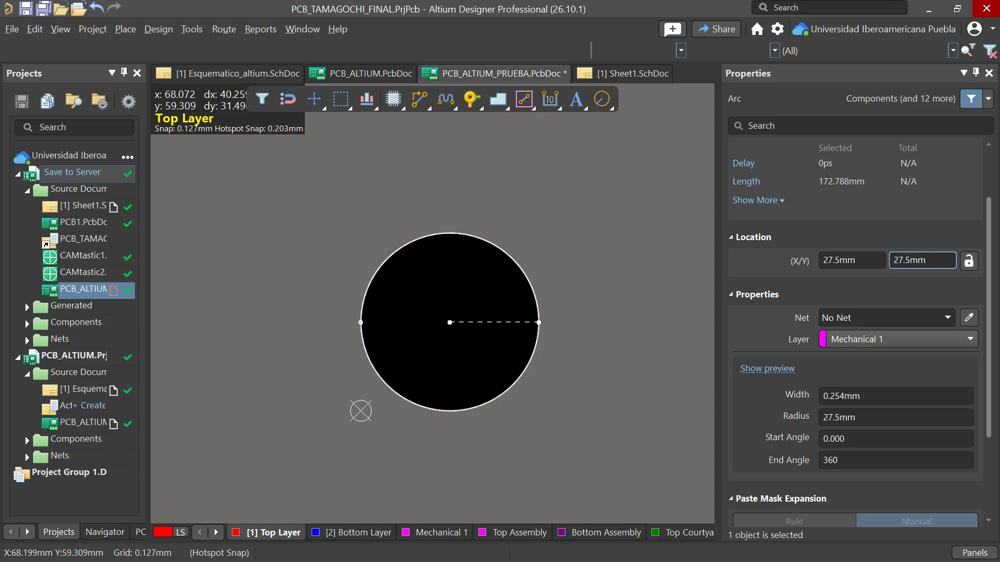
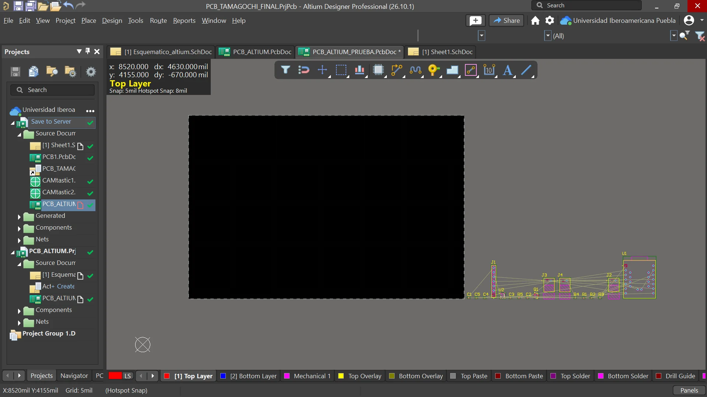
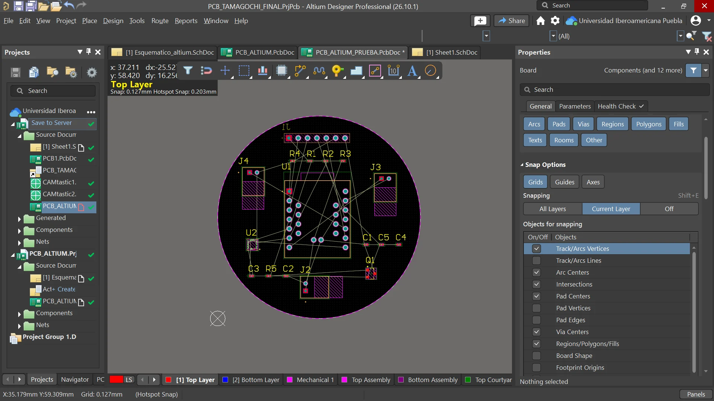
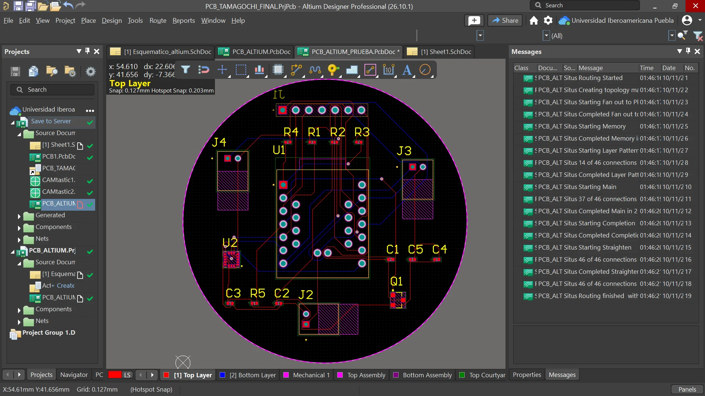
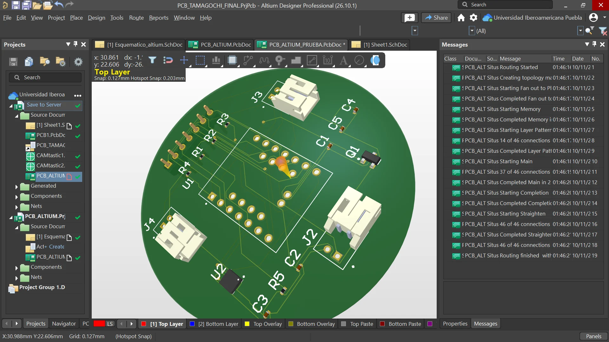
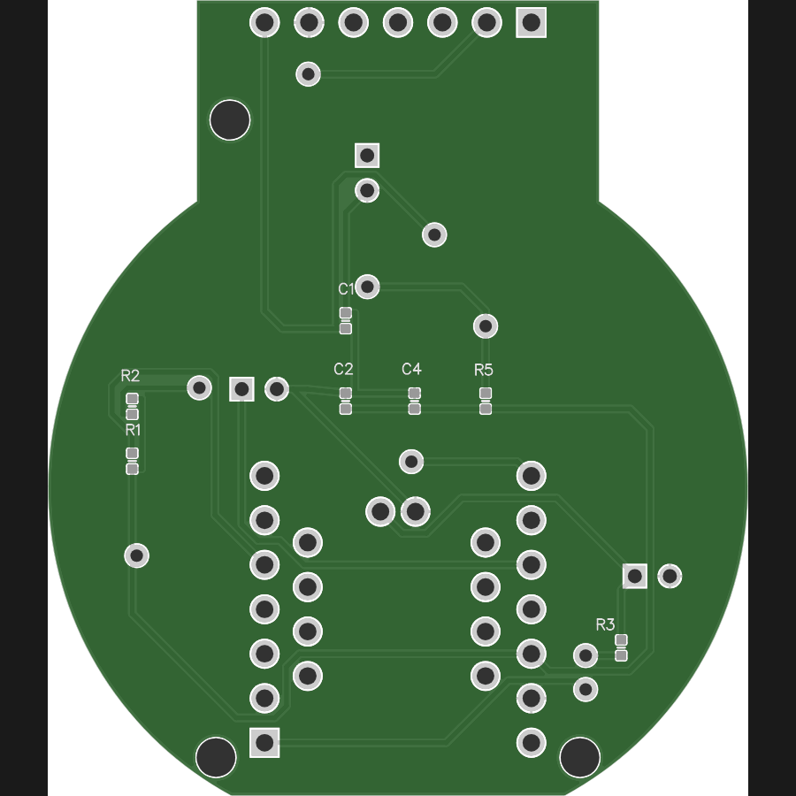
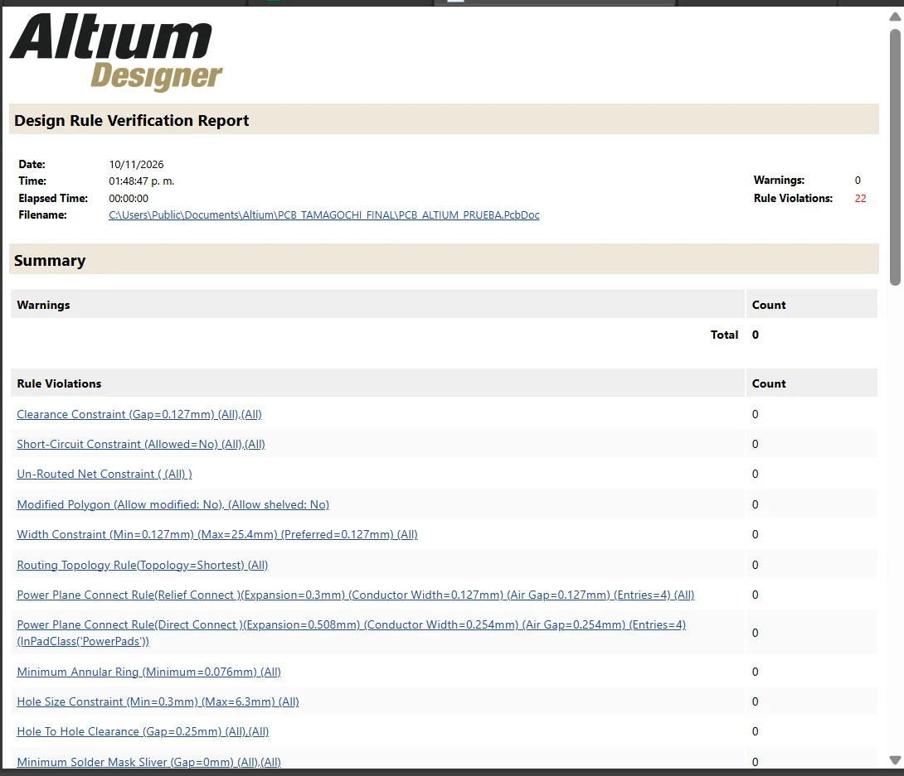

4. PCB — Kiro v1
Nomenclatura. El proyecto se llama Kiro. La primera PCB (estado actual) es Kiro v1. Se mandó a fabricar con el nombre anterior, así que la serigrafía dice «Alux V1» y los archivos de fabricación se llaman Gerbers_Alux.zip / BOM_ALUX.csv. Aunque es la segunda iteración del proyecto, se conserva como v1.
Archivos: hardware/pcb_altium/PCB1.PcbDoc (placa enviada a fabricar, 31-oct) y PCB_ALTIUM_PRUEBA.PcbDoc (placa de práctica/tutorial, 10-nov). Herramienta: Altium Designer Professional 26.10.1.
Especificaciones
| Parámetro |
Valor |
| Forma |
Circular, ~55 mm de diámetro (radio 27.5 mm, capa Mechanical 1) — ver nota de contorno |
| Capas |
2 (Top / Bottom) |
| Espesor |
1.0 mm (JLCPCB usa 1.6 mm por defecto: cambiarlo a mano) |
| Cobre |
1 oz (35 µm) |
| Acabado |
ENIG (obligatorio para el LGA-16 de 0.5 mm), oro 1 U" |
| Máscara / serigrafía |
Azul / blanca |
| Reglas |
Archivo .RUL de JLCPCB (Replace all): clearance 0.127 mm, pista mín 0.127 mm, anillo mín 0.076 mm, agujero mín 0.3 mm |
| Taladros |
49: 9×0.711 mm, 6×0.8 mm, 24×1.0 mm, 7×1.02 mm (PTH) + 3×2.2 mm NPTH (tornillos M2) |
| Conexiones ruteadas |
46 / 46 (autoruteo Situs + ajuste manual) |
Proceso de diseño (capturas)
1. Forma circular — círculo de radio 27.5 mm en Mechanical 1 → Design → Board Shape → Define from selected objects:

2. Importar el esquemático — Design → Import Changes: aparecen las huellas con las conexiones (líneas de rata):

3. Acomodar componentes — XIAO al centro, display (J1) en el borde, sensor y conectores alrededor:

4. Ruteo — autoruteo con Situs y ajuste a mano; el log de Altium confirma "46 of 46 connections":

5. Vista 3D del resultado ruteado y con la firma en la serigrafía ("designed by Alexa and Alessandro"):

Las capturas 1–5 provienen de la práctica de Altium (placa PCB_ALTIUM_PRUEBA, misma metodología y mismo esquemático PCB_TAMAGOCHI_FINAL). La disposición final de componentes de PCB1.PcbDoc se ve en los renders de los Gerbers (abajo).
PCB1.PcbDoc — la placa enviada a fabricar (captura de Altium)

Confirmada por el equipo como la placa enviada a fabricar. Vista Top (rojo = cobre Top, azul = cobre Bottom) en la capa Mechanical 1. Se ve: el nombre «Alux V1» (hoy Kiro v1) con "Created by Alexa and Alessandro", el logo IBERO PUEBLA, J2 con BAT−/BAT+, J3 (BTN1), J4 (BTN2), Q1, el IMU (U2) con C3/C5, los capacitores/resistencias del lado Bottom en transparencia, los tres agujeros de montaje numerados 7, 8 y 9 y el contorno: un círculo con una pestaña/cuello rectangular arriba (donde van J3 y el header del display). El rectángulo amarillo grande del XIAO llega hasta el borde inferior del círculo.
Render de los Gerbers enviados (Gerbers_Alux.zip)
Generados con gerbonara a partir del paquete real de fabricación del 31-oct-2026:
Top (cobre, máscara y serigrafía):

Bottom:

Se aprecian: header del display J1 arriba, XIAO al centro, J2 (batería, BAT+/BAT−), J3/J4 (BTN1/BTN2), Q1, el IMU (U2), el logo IBERO Puebla en la serigrafía y el texto «Alux v1» — el nombre anterior del proyecto; esta placa es hoy Kiro v1.
Nota de contorno. El contorno (capa .GM / Mechanical 1) es un círculo con una pestaña rectangular arriba, igual que en la captura de Altium de PCB1.PcbDoc. Las notas decían "circular 55 mm": el cuerpo es circular, pero con esa pestaña (inconsistencia 7).
Colocación (Pick & Place, 31-oct)
| Lado |
Componentes |
| Top |
J1 (header display), J2, J3, J4 (JST), U2 (LIS3DHTR), XIAO, Q1, R4, C3, C5 |
| Bottom |
R1, R2, R3, R5, C1, C2, C4 |
(Fuente: Pick Place for PCB1.csv. Las notas mencionaban J1 en Bottom; ver inconsistencia 6.)
DRC (Design Rule Check)
| Informe |
Fecha |
Violaciones |
Detalle |
PCB1 (la enviada) |
31-oct |
26 |
20 de Silk to Solder Mask (serigrafía a 0.125 mm < 0.127 mm de pads 0402) + 6 de Board Outline Clearance (líneas de serigrafía del contorno del XIAO y de J1 a menos de 0.2 mm del borde de placa; una colisiona) — todas estéticas |
PCB_ALTIUM_PRUEBA |
10-nov |
22 |
20 de Silk to Solder Mask + 2 de Board Outline Clearance (textos J1 y J4) |
Reglas eléctricas (Clearance, Short-Circuit, Un-Routed Net, Width, Annular Ring, Hole Size, Hole-to-Hole): 0 violaciones en ambos informes.

Informes completos: hardware/pcb_altium/Project Outputs for PCB_TAMAGOCHI_FINAL/Design Rule Check - *.html.
Salidas de fabricación
Ver 5. Fabricación.